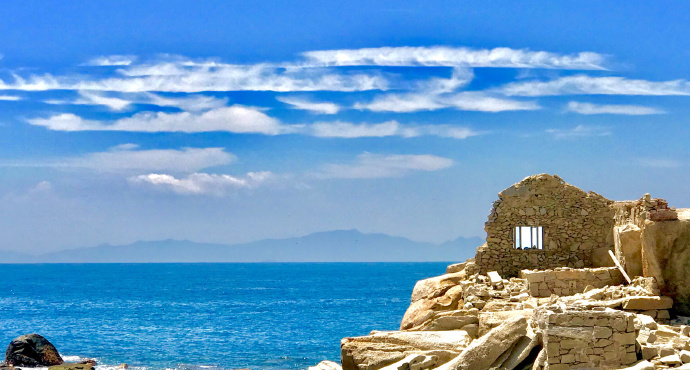
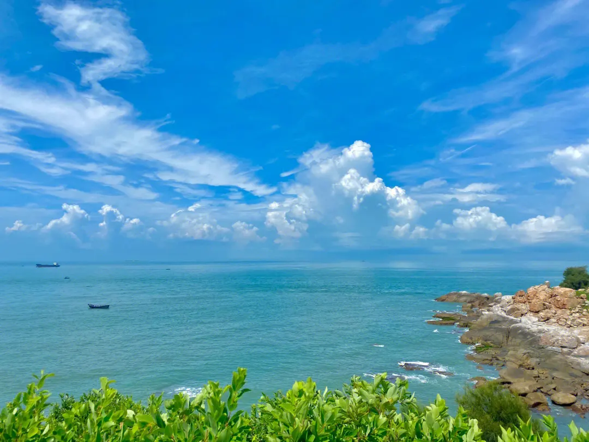

发布者：欧欧阅读数：564
南澳岛（Nan'ao Island），位于中国广东省汕头市南澳县，北濒柘林湾、南濒南海，介于东经116°56′~117°9′、北纬23°24′~23°29′，属基岩质大陆岛，中华白海豚重要栖息地，被誉为“东方夏威夷”。南澳岛面积达117.73平方千米，海岸线长94.3千米，地处泉州—汕头地震带南端，分布有南澳—长乐断裂和皇岗断裂2条活动性断裂。南澳岛以低山剥蚀丘陵地貌为主，外形似葫芦，海岸多为岩石陡岸，全岛最高峰为大尖山（588.1米）。
南澳岛是中国唯一的全岛域国家AAAA级旅游景区，是南澳县唯一有居民居住的岛屿。南澳岛素有历来是中国东南沿海通商的必经泊点和中转站，也是中国大陆对台和海上贸易的主要通道、“海上丝绸之路”的重要节点。
南澳岛多断裂构造，其位于泉州—汕头地震带南端，已探明区域性大断裂有南澳—长乐断裂、黄岗断裂，上述断裂均为活动性断裂，在岛屿东北海域交汇。南澳岛岩石多属燕山三、五期花岗岩，东部为细粒花岗斑状花岗岩、花岗岩小岩株，北部大尖山有流纹斑岩、凝灰熔岩，中部则多变质岩南澳岛位于中国广东省东南部海域，北濒柘林湾、南濒南海，北回归线横贯全岛，其四至为：东至东角、北至北角、西至长山角、南至东墩角。南澳岛东西向最长21.5千米，南北向最宽10.5千米，面积为117.73平方千米。
